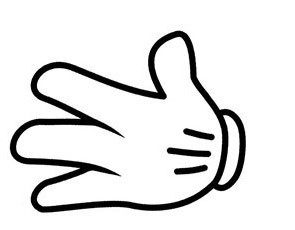

<!DOCTYPE html>
<html lang="ko">
<head>
	<style>
		
	</style>
<meta charset = "UTF-8">
<title> 가위바위보 </title>
<script>
    function reGame (){
		location.reload();
	}
	// 1이 주먹 2가 가위 3 보

	document.write("<h1>컴퓨터 가위, 바위, 보 맞추기</h1>");
	let game = prompt("가위, 바위, 보 중 선택하세요?", "가위");
	let com = Math.ceil( Math.random() * 3 );
	//랜덤함수를 활용하여 가위바위보 게임을 만들어보세요 ^^ 
	document.write(); 
	if(game=="가위" && com== "3") {
		document.write( '컴퓨터 ');
		document.write('유저 ')
		document.write('이겼습니다 ')
	}else if(game=="가위" && com=="2") {
		document.write('컴퓨터 ');
		document.write('유저 ')
		document.write('비겼습니다 ')
	}else if(game=="가위" && com=="1") {
		document.write('컴퓨터 ');
		document.write('유저 ')
		document.write('졌습니다 ')
	}
	if(game=="바위" && com== "3") {
		document.write('컴퓨터 ');
		document.write('유저 ')
		document.write('이겼습니다 ')
	}else if(game=="바위" && com=="2") {
		document.write('컴퓨터 ');
		document.write('유저 ')
		document.write('비겼습니다 ')
	}else if(game=="바위" && com=="1") {
		document.write('컴퓨터 ');
		document.write('유저 ')
		document.write('졌습니다 ')
	}
	if(game=="보" && com== "3") {
		document.write('컴퓨터 ');
		document.write('유저 ')
		document.write('이겼습니다 ')
	}else if(game=="보" && com=="2") {
		document.write('컴퓨터 ');
		document.write('유저 ')
		document.write('비겼습니다 ')
	}else if(game=="보" && com=="1") {
		document.write('컴퓨터 ');
		document.write('유저 ')
		document.write('졌습니다 ')
	}
	// if(game=='가위'){
	// 	if(com==1){

	// 	}else if(come==2)
	// }


</script>
</head>
<body>

</body>
</html>